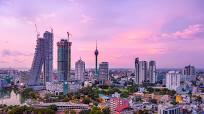

Colombo
sigriya
Kandy

Dambulla

Mirissa

ARUGAM-BAY

Velligama
The Pearl Of Indian Ocean
Sri Lanka, often referred to as the "Pearl of the Indian Ocean," is renowned for its warm hospitality and
stunning array of tourist attractions. Situated in South Asia, this island nation boasts a rich tapestry of
cultural heritage, breathtaking landscapes, and a diverse range of experiences for travelers.
Hospitality in Sri Lanka is deeply ingrained in its culture. Visitors are welcomed with genuine warmth and
friendliness wherever they go. From the bustling streets of Colombo to the serene tea plantations in the
hill country, locals are known for their hospitality, always ready to assist and share their culture with
visitors. Whether you're staying in a luxury resort, a cozy homestay, or a guesthouse, you're likely to be
treated with warmth and kindness.
When it comes to tourist attractions, Sri Lanka offers a wealth of experiences. The ancient city of
Anuradhapura, with its well-preserved ruins and sacred sites, provides a glimpse into the country's rich
history and Buddhist heritage. Nearby, the rock fortress of Sigiriya, a UNESCO World Heritage site, offers
panoramic views from its summit and showcases remarkable ancient architecture.
For nature lovers, Sri Lanka is a paradise. The central highlands are carpeted with lush tea plantations,
where you can take scenic train rides through the misty mountains or enjoy a leisurely hike to Ella Rock.
The island's wildlife sanctuaries, such as Yala National Park and Udawalawe National Park, offer
opportunities to spot elephants, leopards, and a myriad of bird species in their natural habitats.
The coastal regions of Sri Lanka are equally captivating. The picturesque beaches of Mirissa and Unawatuna
are perfect for sunbathing, swimming, and water sports like snorkeling and diving. Meanwhile, the historic
city of Galle, with its charming colonial architecture and cobblestone streets, beckons visitors to explore
its fortifications and artisan shops.

Fish Ambul Thiyal

Kottu

Kukul Mas Curry

Lamprais

Sri Lankan Egg Hoppers

Kiribhath

Wood
Apple
Sri Lanka offers a variety of train facilities that provide tourists with a unique and scenic way to explore
the country's diverse landscapes and cultural heritage.
The Sri Lankan railway network, operated by Sri Lanka Railways, connects major cities, towns, and tourist
destinations across the island. Traveling by train in Sri Lanka is not just about getting from one place to
another; it's an experience in itself, offering breathtaking views of verdant tea plantations, misty
mountains, picturesque villages, and coastal scenery.
One of the most famous train journeys in the world is the route from Colombo to Kandy, known as the Main
Line. This scenic journey takes you through lush countryside, past terraced tea estates, and alongside
charming villages. The train ride to Kandy provides an immersive experience, allowing travelers to soak in
the sights, sounds, and smells of rural Sri Lanka.
Another iconic train journey is the route from Kandy to Ella, which passes through the heart of the island's
hill country. This journey is renowned for its stunning scenery, including cascading waterfalls, dense
forests, and sweeping vistas of the valleys below. The train ride to Ella is often cited as one of the most
beautiful in the world, offering unparalleled opportunities for photography and relaxation.
Tourists exploring Sri Lanka can choose from a range of train classes to suit their preferences and budget.
The trains typically offer first-class, second-class, and third-class seating options, with varying levels
of comfort and amenities. First-class carriages provide air-conditioned comfort and reserved seating, while
second-class and third-class carriages offer a more authentic and communal experience, with open windows and
the chance to interact with locals.
Sri Lanka provides extensive airplane facilities for tourists, offering convenient access to the island's
diverse attractions and regions.
Bandaranaike International Airport (BIA), located near the capital city of Colombo, serves as the main
gateway for international travelers arriving in Sri Lanka. With modern facilities and services, BIA ensures
a smooth entry process for tourists, including visa facilities, immigration, baggage handling, and
transportation options to various destinations across the island.
In addition to BIA, Sri Lanka has several domestic airports and airstrips scattered throughout the country,
facilitating air travel to popular tourist destinations such as Kandy, Nuwara Eliya, Trincomalee, and
Jaffna. These domestic airports offer scheduled flights operated by local airlines, providing tourists with
quick and convenient access to different regions of the island.
One of the most popular domestic air routes is the flight from Colombo to the cultural city of Kandy. This
short flight saves travelers several hours of travel time compared to road or rail transportation, allowing
them to maximize their time exploring Kandy's historic sites, including the Temple of the Tooth Relic and
the Royal Botanical Gardens.
For tourists looking to explore Sri Lanka's pristine beaches and coastal attractions, domestic flights to
cities like Galle, Bentota, and Trincomalee offer quick and comfortable transportation options. These
flights provide easy access to sun-kissed beaches, water sports activities, and cultural experiences along
the coast, making it convenient for travelers to hop between destinations and create their ideal beach
holiday itinerary.
Sri Lanka offers a comprehensive road transport network that provides tourists with convenient access to its
diverse attractions, cultural sites, and natural landscapes.
One of the most common modes of road transport for tourists is the use of taxis and private vehicles. In
major cities like Colombo, Kandy, and Galle, tourists can easily hire taxis or use ride-hailing services
like Uber and PickMe to navigate urban areas and explore local attractions. Private vehicles offer
flexibility and convenience, allowing travelers to customize their itineraries and visit off-the-beaten-path
destinations at their own pace.
For longer journeys and intercity travel, Sri Lanka has a well-developed bus network that connects major
cities and towns across the island. Public buses are an affordable and popular option for tourists, offering
frequent services and routes to popular tourist destinations. From Colombo, travelers can catch buses to
various parts of the country, including Kandy, Nuwara Eliya, Ella, and Dambulla, among others. While public
buses may be crowded and less comfortable than private vehicles, they provide an authentic travel experience
and an opportunity to interact with locals.
Another popular mode of road transport for tourists is the use of rental cars and motorcycles. Several
international and local rental companies offer a range of vehicles, including cars, vans, and motorbikes,
for tourists to explore Sri Lanka independently. Renting a vehicle allows travelers to venture off the
beaten path, discover hidden gems, and enjoy the freedom of exploring at their own pace. However, it's
important to familiarize yourself with local driving regulations and road conditions before embarking on a
self-drive adventure.